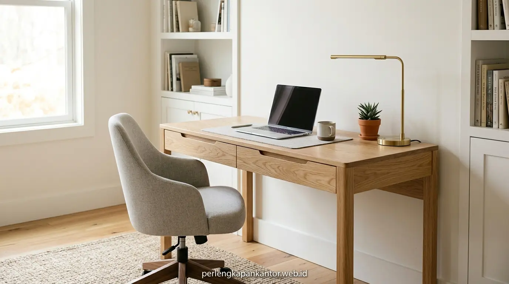
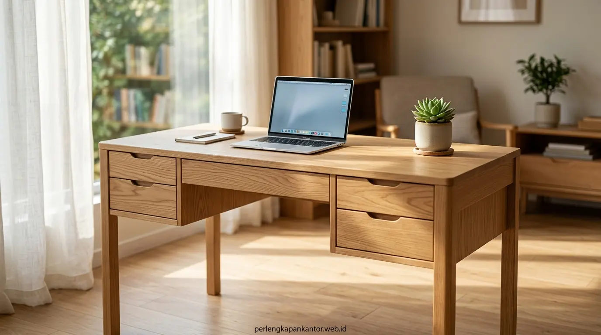

Harga Meja Komputer Laci Minimalis Bahan Kayu Solid
Kisaran harga meja komputer kayu solid berkualitas berada pada rentang Rp 1.450.000 hingga Rp 3.850.000 tergantung varietas kayu alami, dimensi meja, mekanisme rel laci, dan proteksi finishing.


Meja kerja komputer kayu solid dengan laci samping terintegrasi menghadirkan nuansa ruang kerja yang elegan, hangat, dan kokoh bertahun-tahun.
- Durabilitas Jangka Panjang: Meja kayu solid memiliki masa pakai hingga 10–15 tahun tanpa risiko melengkung atau hancur terkena rembesan air.
- Konstruksi & Fitur Modern: Dilengkapi laci rel teleskopik soft-close, lubang kabel (grommet) tersembunyi, dan rangka sambungan kayu presisi.
- Efisiensi Anggaran Korporat: Nilai depresiasi yang sangat rendah menjadikan meja kayu solid investasi furnitur paling menguntungkan secara TCO.
- Layanan B2B Fleksibel: PerlengkapanKantor menyediakan opsi kustomisasi dimensi, sampel warna kayu, dan diskon paket pengadaan WFH kantor.
- Mengapa Meja Komputer Kayu Solid Menjadi Pilihan Favorit Pengambil Keputusan?
- Faktor Apa Saja yang Mempengaruhi Variasi Harga Meja Komputer Kayu Solid di Pasaran?
- Bagaimana Keunggulan Kayu Jati Jepara dan Mahoni Oven untuk Ruang Kerja?
- Tabel Komparasi Harga & Spesifikasi: Kayu Solid vs Papan Olahan (MDF/Partikel)
- Bagaimana Memilih Supplier Meja WFH Murah yang Menyediakan Garansi Mutu?
- Mengapa Membeli Meja Komputer di PerlengkapanKantor Lebih Efisien dan Terjamin?
- FAQ: Pertanyaan Seputar Kustomisasi Meja Kayu Solid & Pesanan Skala Besar
- Kesimpulan Praktis
Mengapa Meja Komputer Kayu Solid Menjadi Pilihan Favorit Pengambil Keputusan?
Meja komputer kayu solid menjadi primadona karena memadukan estetika prestisius, kekuatan menahan beban perangkat elektronik berat, dan daya tahan bebas lapuk.
Bagi pengambil keputusan (decision makers), manajer procurement, dan manajer HR/fasilitas, memilih furnitur kantor bukan sekadar mencari harga termurah saat transaksi awal. Meja kerja berbahan papan partikel (particle board) lapis kertas sering kali hancur atau melengkung hanya dalam waktu 12–18 bulan jika terkena kelembapan AC kantor atau tumpahan air minum.
Berdasarkan data Himpunan Industri Mebel dan Kerajinan Indonesia (HIMKI, 2024), permintaan meja kantor kayu solid ramah lingkungan meningkat sebesar 34% di sektor korporat dan tech startup karena kebutuhan furnitur yang tahan pemakaian intensif. Selain itu, laporan Survey Fasilitas Ruang Kerja Modern (2025) mencatat bahwa 81% karyawan merasa lebih fokus dan termotivasi saat bekerja di workstation bertekstur kayu alami yang estetik dibandingkan kubikel plastik sintetis dingin.
Faktor Apa Saja yang Mempengaruhi Variasi Harga Meja Komputer Kayu Solid di Pasaran?
Variasi harga dipengaruhi oleh jenis spesies kayu (jati, mahoni, sungkai, jati belanda), tingkat kekeringan oven (MC 10-12%), ketebalan daun meja, dan jenis rel laci.
Saat Anda menelusuri katalog harga meja komputer kayu solid, terdapat beberapa elemen penentu kalkulasi biaya:
Kayu jati perhutani dan mahoni grade A memiliki kepadatan serat premium yang dihargai lebih tinggi dibandingkan kayu pinus/jati belanda daur ulang palet.
Ketebalan solid 3 cm hingga 4 cm memberikan kekokohan mutlak saat dipasangi multi-monitor arm heavy-duty tanpa risiko retak.
Penggunaan rel laci double-track soft-close berbahan baja anti-karat menjamin laci meluncur senyap dan tidak mudah anjlok.
Lapisan coating PU 3 lapis (sealant, stain, clear coat) anti-gores dan kedap tumpahan air kopi maupun alkohol pembersih.
Bagaimana Keunggulan Kayu Jati Jepara dan Mahoni Oven untuk Ruang Kerja?
Keunggulan kayu jati jepara dan mahoni oven terletak pada serat alaminya yang rapat, ketahanan alami terhadap rayap, dan kestabilan dimensi bebas muai-susut.
Dalam industri furnitur perkantoran, dua material kayu solid ini menjadi tolok ukur standar mutu tertinggi:
- Kayu Jati (Teak Wood): Memiliki kandungan zat minyak alami (tectoquinone) yang secara biologis menolak serangan hama rayap dan jamur kayu. Meja kerja kayu jati jepara memiliki urat kayu artistik bernilai estetika tinggi yang cocok untuk meja direktur, manajer, maupun ruang kerja eksekutif.
- Kayu Mahoni (Mahogany Wood): Memiliki pori-pori sangat halus dan serat lurus homogen. Setelah melalui proses pengeringan kiln-dried (oven) dengan kadar air di bawah 12%, kayu mahoni sangat ideal untuk meja kerja bertema minimalis modern atau finishing cat duco premium.

Sambungan kayu mortise & tenon presisi serta finishing natural matte menonjolkan keindahan serat kayu solid asli tanpa cela.
Tabel Komparasi Harga & Spesifikasi: Kayu Solid vs Papan Olahan (MDF/Partikel)
Analisis perbandingan membuktikan meja kayu solid memiliki nilai investasi jangka panjang (ROI) jauh lebih menguntungkan dibanding meja partikel murah.
Berikut perbandingan komprehensif antara berbagai jenis material meja komputer untuk pertimbangan pengadaan kantor Anda:
| Tipe Material Meja | Ketahanan Terhadap Air & Rayap | Daya Tahan Beban (Durabilitas) | Estimasi Kisaran Harga |
|---|---|---|---|
| Kayu Jati Jepara Solid (Grade A) | Sangat Tinggi (Alami tahan rayap & anti-lapuk) | 10–15+ Tahun (Menahan beban hingga 150 kg) | Rp 2.650.000 – Rp 3.850.000 |
| Kayu Mahoni Solid (Oven Kiln-Dried) | Tinggi (Dilapisi coating PU tahan tumpahan air) | 8–12 Tahun (Kuat dan stabil) | Rp 1.650.000 – Rp 2.450.000 |
| Kayu Sungkai / Pinus Solid | Sedang-Tinggi (Warna terang minimalis Japandi) | 6–10 Tahun (Ideal untuk workstation staff) | Rp 1.450.000 – Rp 1.950.000 |
| Papan Partikel / MDF Lapis Paper (Pasaran) | Sangat Rendah (Mudah menggelembung terkena air) | 1–2 Tahun (Rentan patah dan melengkung) | Rp 600.000 – Rp 1.100.000 |
Bagaimana Memilih Supplier Meja WFH Murah yang Menyediakan Garansi Mutu?
Pilihlah supplier meja kerja yang memiliki fasilitas workshop mandiri, jaminan kayu kering oven (kiln-dried), fleksibilitas pesanan kustom, dan ulasan kredibel.
Banyak penjual online yang menawarkan harga meja komputer kayu solid dengan banderol tidak masuk akal, namun menggunakan kayu sisa basah yang akan retak atau melengkung setelah beberapa bulan terkena suhu AC ruangan. Pastikan supplier pilihan Anda memberikan:
- Sertifikasi Kadar Air (Moisture Content): Kayu wajib dioven hingga mencapai MC 10%–12% agar struktur serat kayu stabil saat mengalami perubahan cuaca.
- Grommet & Cable Management Tray: Fasilitas lubang jalur kabel rapi agar stopkontak dan adaptor laptop tidak berantakan di atas meja.
- Garansi Konstruksi Rangka: Garansi resmi penggantian atau perbaikan minimal 1 tahun untuk sambungan kayu dan rel laci.
Mengapa Membeli Meja Komputer di PerlengkapanKantor Lebih Efisien dan Terjamin?
PerlengkapanKantor memberikan jaminan kayu solid oven bersertifikasi, opsi kustom ukuran ruangan, faktur pajak resmi lengkap, serta gratis instalasi wilayah Jabodetabek.
Sebagai mitra pengadaan perlengkapan kantor terkemuka di Indonesia, kami memahami kebutuhan efisiensi anggaran korporat sekaligus tuntutan kualitas furnitur kelas atas:
- Paket Bundling WFH & Workstation Hemat: Hemat hingga 20% saat membeli paket komplit meja komputer kayu solid bersama kursi ergonomis pilihan.
- Dukungan Transaksi B2B Resmi: Melayani sistem Purchase Order (PO), termin pembayaran fleksibel (TOP), dan penerbitan e-Faktur PPN 11%.
- Armada Logistik Sendiri: Pengiriman aman anti-lecet menggunakan armada khusus langsung sampai ke lantai kerja kantor Anda.
FAQ: Pertanyaan Seputar Kustomisasi Meja Kayu Solid & Pesanan Skala Besar
Berikut jawaban atas pertanyaan yang sering diajukan terkait harga meja komputer kayu solid dan spesifikasi pemesanan:
Kesimpulan Praktis
Memilih meja komputer kayu solid laci minimalis adalah keputusan investasi cerdas yang menggabungkan estetika prestisius, kenyamanan kerja jangka panjang, dan ketahanan puluhan tahun. Dapatkan promo paket WFH hemat sekarang!
Penulis: Tim Spesialis Perlengkapan Kantor
Divisi riset furnitur kayu dan desain interior ruang kerja di PerlengkapanKantor. Mengedepankan integrasi keindahan kayu alami nusantara dengan ergonomi workstation modern.